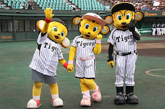
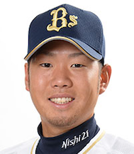

| 名前 | 山本 |
| 生年月日 | 西 勇輝 世代 |
| 阪神ファン歴 | 野村阪神から(約20年) |
| 好きな選手 | 金本・鳥谷・藤浪・大山・マートン・メッセンジャー |
| 座右の銘 | 必死のパッチ |
不調に悩む阪神のエース。2014年には14勝をあげ最多奪三振のタイトルを獲得。優勝には藤浪の復活が不可欠。そろそろ復活に期待。
2016年のドラフト1位で金本チルドレンの一人。新人ながら4番も務め安定した守備も披露。若虎の大砲として来シーズンも活躍してほしい。似ている芸能人はみやぞん。
大山と同じく16年金本チルドレンの一人。入団2年目で公式戦全試合出場は鳥谷以来。選球眼が良く出塁率.390と虎のリードオフマンとして来シーズンも活躍に期待。
2018年度ゴールデングラブ賞獲得の虎の正捕手。大学時代は全日本で4番を打つなど打撃センスも兼ね備えたキャッチャー。来季も梅ちゃんバズーカで盗塁阻止に期待。
A.1 写真の右からトラッキー・ラッキー・キー太
A.2 リーグ優勝9回・日本一5回
1937年(日本一)
1938年(日本一)
1944年(日本一)
1947年(日本一)
1962年
1964年
1985年(日本一)
2003年
2005年
A.3 岡田彰布氏
A.4 西勇輝
＊糸原と似ているので見間違いに注意
またFAの人的補償として竹安がオリックスに移籍した(泣)